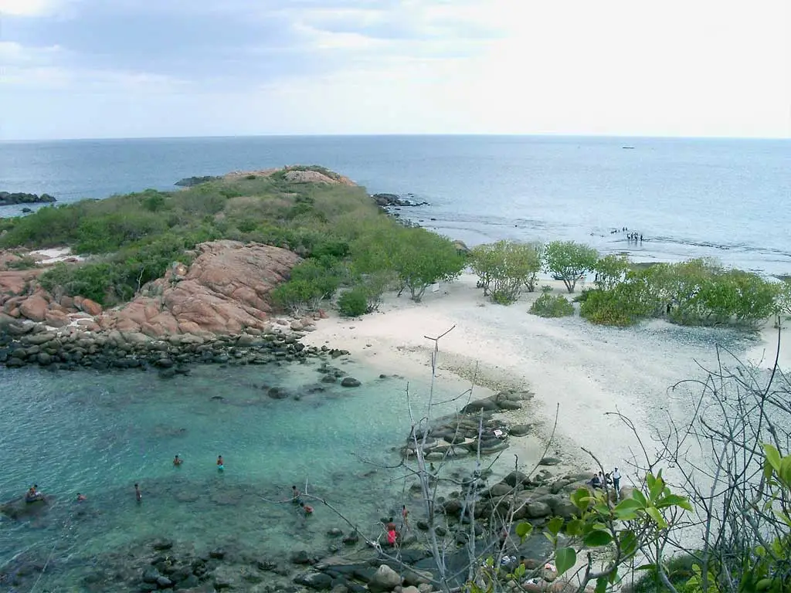
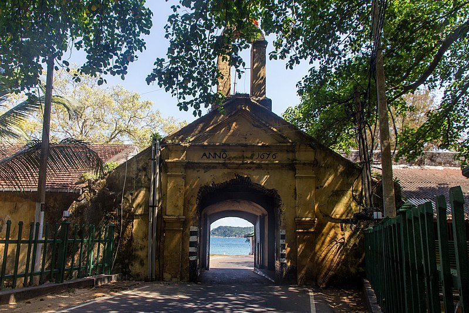

Nilaveli Beach is located on the northeastern coast of Sri Lanka, in the Trincomalee District.
It is a long, wide stretch of white sand that meets crystal clear waters of the Indian Ocean.
The beach is known for its calm, shallow waters, making it a popular destination for swimming, snorkeling, and scuba diving.
Visitors can spot a variety of marine life, including colorful fish, sea turtles, and even sharks.
The surrounding area is also home to a number of dive sites, including the Pigeon Island National Park.
Nilaveli Beach is also a great spot for water sports such as windsurfing, jet skiing, and banana boating.
The beach is less crowded than other popular Sri Lankan beaches, making it an ideal place to relax and unwind.
Nearby accommodations range from luxury resorts to simple beachside bungalows.
Visitors can also take day trips to explore the historic city of Trincomalee, which is known for its ancient Hindu temples and colonial-era fort.
The best time to visit Nilaveli Beach is from May to September, when the weather is sunny and dry with calm seas.
There is a 10-minute boat ride from Nilaveli Beach. This tiny island just offshore of Nilaveli Beach is actually a national park in Sri Lanka. The island is well-known for the diversity of its marine life, which includes many turtles and Blacktip reef sharks. This puts it among the top things to do in Nilaveli Beach, along with the presence of a stunning coral reef.
around 20 minutes from Nilaveli.The old fort was built to protect one of Sri Lanka's most important strategic ports, and while not much of it remains today, it's still a fascinating place to visit.There are two temples worth visiting inside the fort. The Gokanna Raja Monastery and the Koneshwaram Temple are the two.
Nilaveli offers a variety of lodging choices, from affordable guesthouses to opulent resorts. Many of the hotels and resorts are directly on the beach, providing breathtaking views of the water and quick access to other activities like water sports.
The Bandaranaike International Airport in Colombo, which is about 265 kilometers away, is the closest airport to Nilaveli. Visitors can then hire a tuk-tuk or taxi to travel to Nilaveli from Trincomalee by taking a taxi or the bus from there. As an alternative, a number of train services connect Colombo with Trincomalee, and the trip takes 6 to 8 hours.


Copyright © All Rights Reserved.